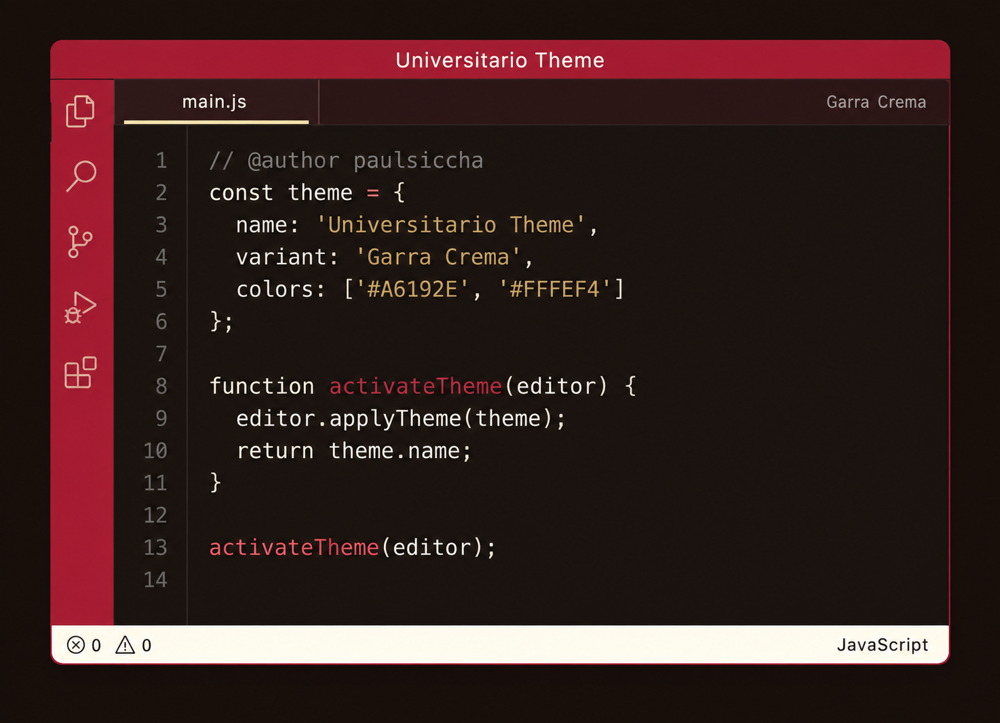
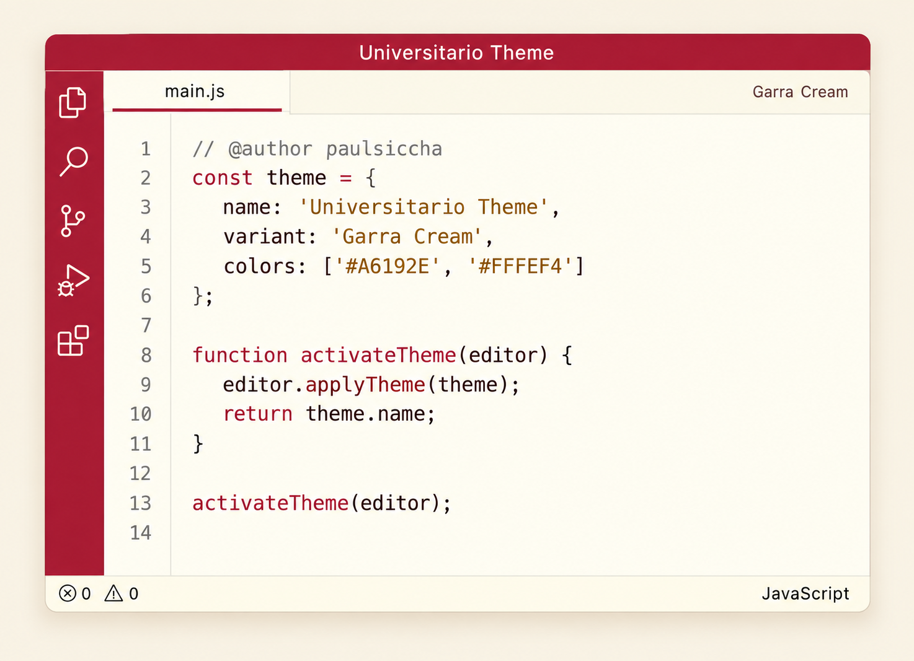

Tema de VS Code y Cursor inspirado en Universitario de Deportes - Disponible en variantes oscura y clara

Descarga la última versión desde Releases
Asegúrate de tener el editor abierto
Presiona Cmd+Shift+P (Mac) o Ctrl+Shift+P (Windows/Linux)
Escribe y selecciona "Extensions: Install from VSIX..."
Elige el archivo .vsix que descargaste
Presiona Cmd+Shift+P → "Preferences: Color Theme" → "Garra Crema" (oscuro) o "Garra Crema Cream" (claro)
Si instalaste también los íconos de producto, cierra y reabre el editor para que se apliquen correctamente.
